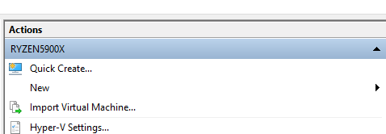
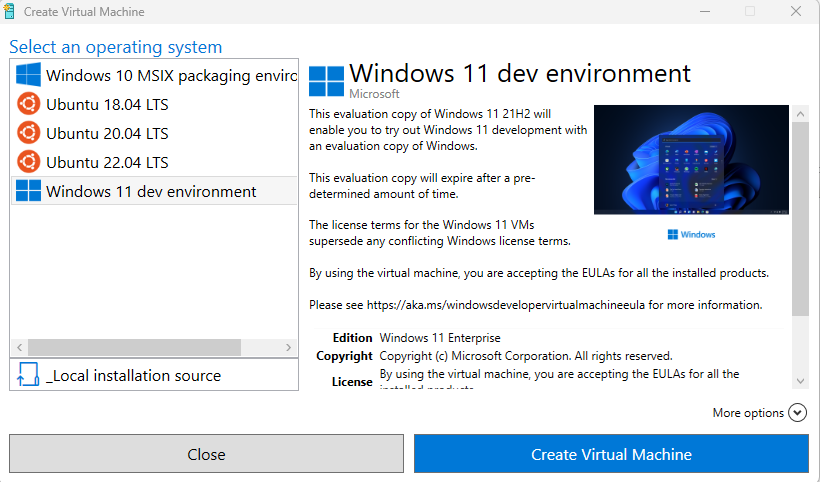
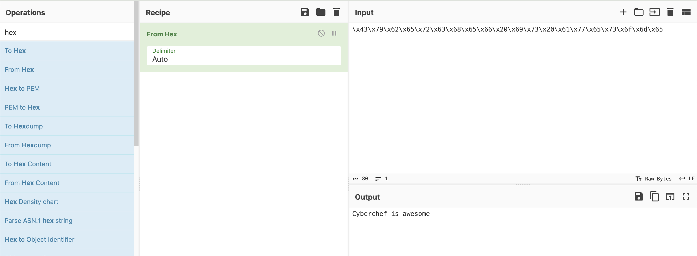
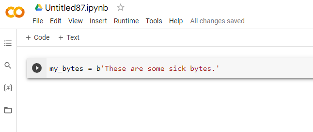
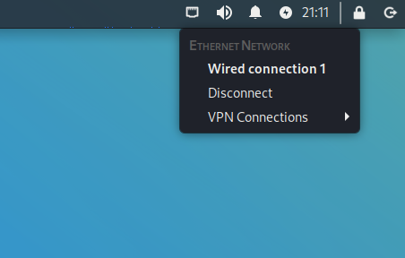

Welcome to the Capture the Flag class!
Dave Henthorn, Rose-Hulman Institute of Technology.
In this course, we're going to learn some of the basic tactics, techniques, and procedures associated with solving CTF challenges. Along the way, I hope you will pick up on some key cybersecurity basics.
CTF Tools
Here's a list of tools that we will use in this course.
Virtual Machines
Many of us run our CTF/penetration testing tools inside a virtual machine instead of on our desktop.
This helps because we can:
- keep our own machines free of extraneous tools
- protect our machines from software of unknown origin
- run tools that are not native to our default OS
Before you can run a virtual machine (the guest), you need to set up the host machine as a hypervisor.
Hypervisors
Hypervisors are the software piece that manage virtual machines and allow them access to your hardware. The most common hypervisors for penetration testing or CTF competitions are:
- VMware
- VirtualBox
- Hyper-V
- KVM / QEMU
I find hypervisors to be a matter of personal preference -- each has a set of pros/cons. Some thoughts:
VMware:
- The flagship VMware hypervisors are run on the largest servers in the world and are hugely expensive and immensely capable. The company provides some of this functionality in desktop versions, VMware Player (Intel/AMD) and VMware Fusion (Mac). While these cost money, they provide them free for non-commercial and academic use. These are my personal choice. High quality networking options, display tuning, snapshots, etc. Fusion (Mac) can be found here while Player (Intel/AMD) is here.
VirtualBox
- Available here Sort of the opposite of VMware... much of it is open source (GPLv2 license) and free. Very popular for hackers because of this. I wish it had better documentation and advanced networking support, but you can't beat the price.
Hyper-V
- Developed by Microsoft and available as a built-in service in many versions of Windows, this is an easy one to use for many people. Growing in popularity every year. Learn how to enable Hyper-V here. With some configuration tweaks you can use Enhanced Session Mode which enables a better graphical experience along with a working clipboard, complete with file transfer.
KVM/QEMU
- Great choice if you are on a Linux distro. Instructions for enabling on Debian distros here.
VM Snapshots
One of the coolest features of VMs is the ability to take "snapshots". You are, in essence, saving the state of a VM at that instant in time. You can then roll back changes to a previous known state whenever needed.
For CTF competitions, a workflow I see quite a bit is:
- Create a VM and tweak with all the tools you will need.
- Snapshot the VM.
- Start a challenge. This may require you to install new software, add new packages to Python, add temporary entries to /etc/hosts, download binaries for reverse engineering, etc.
- Complete the challenge.
- Rollback the VM to the pre-challenge snapshot. On to the next challenge!
On Hyper-V, snapshots are known as Checkpoints.
On Hyper-V Manager, right click your VM and select Checkpoint.
You will thank yourself later if you rename the checkpoint to something more descriptive.

Creating a shared file space between your host and guest (VM).
Warning: One of the main reasons we run VMs is to create isolation between our work machine and potentially malicious code. Think hard about the implications of allowing a guest VM access to some of your files.
To create a shared file space between your host and VM, you can use the Settings area of VMware Player and select "Shared Folders".

On your Kali VM, complete the following:
sudo mkdir /mnt/shared
sudo /usr/bin/vmhgfs-fuse .host:/shared /mnt/shared -o subtype=vmhgfs-fuse,allow_other
Tweak the line above if you named your share something other than shared. A shared file space is now available at /mnt/shared on your VM.
On Windows:

On Kali:

Kali Linux
The most famous distribution of Linux used by hackers worldwide. The main website is here.
Note that Kali is based on Debian Linux so you can find tips on setup, package management, etc. by searching for Kali, Debian, or even Ubuntu.
From the Kali website:
The Kali Linux distribution is based on Debian Testing. Therefore, most of the Kali packages are imported, as-is, from the Debian repositories. In some cases, newer packages may be imported from Debian Unstable or Debian Experimental, either to improve user experience, or to incorporate needed bug fixes.
I prefer create a VM from scratch using an ISO from here.
If you have a working hypervisor and are on PC, you can also grab a pre-built VM image from here
As of August 2023, the most recent version is 2023.3

Installing Kali Linux on Hyper-V
For this class I would like us to use Hyper-V as our hypervisor of choice. We will be working with the following:
- Kali under Hyper-V with Enhanced Session Mode
- Windows Dev images for some proof-of-concept work. Info here.
- Windows Sandbox mode Link to Sandbox mode.
Contact me if you are planning to use a Mac or Linux laptop for this course.
Ready to install Kali on Hyper-V? Follow these instructions:
- Enable Hyper-V if you haven't already. Instructions are here.
- Enable Enhanced Session Mode in Hyper-V. Follow this guide for instructions.
- Download an installation ISO (not pre-built VM) from here.
- Set up a Hyper-V VM for a Kali install. Check out this guide here.
- Install Kali into the new VM. Instructions here.
- Follow these instructions on how to make Enhanced Session Mode active. This will allow you to use the clipboard effectively.
- Use your newly found Copy/Paste abilities to transfer a new desktop wallpaper to your Kali instance, for example from here.
At this point, you should have Kali in a beautifully rendered screen with a functioning clipboard.
kali-tweaks
Be sure to check out the kali-tweaks command. You will find some nice customization options here.
SSH into Kali
Since many of the tools you will use on Kali are command line, you don't always need to use the graphical user interface. Sometimes it's easiest to use a terminal and SSH into your Kali instance.
Out of the box, SSH connections to your Kali box are disabled. To enable them, complete the following on your VM:
Install the OpenSSH server.
sudo apt install openssh-server
Enable the SSH service.
sudo systemctl enable ssh.service
Now start the SSH service.
sudo systemctl start ssh.service
Finally, record the IP address of your box -- usually located at eth0 for a VM with one network interface.
ip a

In the above case, the address of your VM is 192.168.46.91 and your username is kali.
You should be able to login from your desktop now using:
ssh kali@192.168.46.9
Creating a quick Windows Machine for Analysis Work
Sometimes you need to create a quick Windows VM for analysis work. Here's one way:
In Hyper-V, select Quick Create from the Actions panel.

Then select the Windows 11 dev environment. This will create a Windows VM that is ready to go. The best part? All of the Windows stuff (Xbox Live, OneDrive, etc.) that requires you to sign in with an account has been disabled.

Ghidra
Ghidra is an open source tool from the National Security Agency (yes, that NSA!) that we use for reverse engineering.
Ghidra is a Java app, so you need a working JDK before you can run it.
-
On a Linux machine, you can check your Java version with:
java -version -
Look for the version output, something like:
openjdk version "17.0.8" 2023-07-18Be sure that you have version 17 or higher. -
If you need to install Java, you can use the following command on Kali Linux.
sudo apt install default-jdk -
After you download Ghidra, there isn't a traditional installer. Instead, do the following:
-
Unzip the file. In the unzipped archive, you will find a script to start Ghidra.
- On UNIX-like systems, run the file
./ghidraRun- On Windows, run the file:
ghidraRun.bat
-
Cyberchef
Cyberchef is a tool put out by the GCHQ which is "the UK's intelligence, security and cyber agency". It's a webapp that aims to be your go-to tool for hacking data manipulation.
You can find it on the web here or inside many infosec packages like Security Onion.

Cyberchef Example
Here's an example:
On the left you will find a palette with all the different operations possible. You will drag those onto the Recipe panel and that will operate on the Input, producing your Output.
For example, let's say we have the bytes:
\x43\x79\x62\x65\x72\x63\x68\x65\x66\x20\x69\x73\x20\x61\x77\x65\x73\x6f\x6d\x65
Go ahead and copy those bytes into the Input panel of Cyberchef.

Now go over to the left-most palette and search for hex since these look like hexadecimal bytes.
Select From Hex and drag it on to the Recipe panel.

This was a super easy one to solve.

Building recipes in Cyberchef
Let's say we find the following message when reverse engineering a binary.
ttmq3a2X8YKp2qmDp8Kr2avPu4O9wrOCqcyqzraSqJCR45zsk8qK7urJqQ==
We know from inspecting the executable there is an XOR binary operation to obfuscate the text. But our keen eyes notice this is a Base64 encoded string.
Build a recipe that:
- Decodes the Base64 encoded string.
- Decrypts that string using XOR decryption. Unfortunately we only know that the key used for encryption is 2 bytes in size. You will need to brute force it. HINT: We believe it is an
httpstring.
Python
Python is a great tool for ethical hacking! It's ubiquitous, easy to work with, and you can write up a script quickly.
Check out the next few sections for interesting things you can do with Python.
Interactive Python
While many courses teach you to write Python scripts, don't forget that you can work with Python in an interactive manner. This can be done on the command line or through what is called an interactive Python notebook (.ipynb file extension).
My preferred method for quick work in Python is Google Colab, which is free with a Google account.
Open a New notebook from the File menu:

There's nothing to configure or do... just start typing your code in the code block.

And then click the play button to execute that code block. A green checkmark shows that it executed properly.

On the left side, you will see a toolbar. If you select the {x} button it will pull up the Variable inspector and you can see defined variables and their values.

IMPORTANT This is Python running in the cloud. When you are done with this instance it will be wiped and given to someone else. As such, be sure to save your data. Your work, however, is continuously being saved by Colab. If you look at the File menu, you will also see options for saving your notebook in Google Drive or Github, or you can download it to your host.
You can pull files into your Python script from your Google drive or, more easily, by clicking on the folder icon on the left. Use the upload button or simply drag files into this mini file manager.

Extending Colab
Let's say I want to use a library that is not pre-installed on Colab. For example, I want to use the pwntools library to help with a binary CTF challenge. But I run into this issue when I try the import:

You can install pip packages by using the following command:
!pip install -q package_name
where the -q option means a quiet install.
And there we go! Package is now installed and my Colab instance is that much more powerful!
Ultra simple web file sharing using Python
Need to share files quickly? Python has your back.
Navigate to the folder where your file, called filename is located. Note the IP address of the computer and then run:
python -m http.server 9999
This will create an http instance at port 9999 capable of serving files located in that directory.
From a different machine, connect to it through a browser or simply use wget.
wget x.x.x.x:9999/filename
where x.x.x.x is the IP address of your HTTP server.
Note: This is an unencrypted HTTP stream. Be cognizant of the files you transfer over this stream as they will be readily visible.
VPNs
Let's lay out the following scenario:
You have been given permission to assess a specific asset for vulnerabilities, and this asset is connected to the internet. You scan the asset for open ports and find a web server running on port 80. You fire up gobuster to identify potential endpoints on the web site.
WARNING: Network traffic of this sort is associated with threat actors. There is a real possibility that your employer or ISP will flag your activities as malicious and take action.
To remedy this, most CTFs labs and cyber ranges will house their vulnerable assets on internal, protected networks. Your network traffic is tunneled through a Virtual Private Network (VPN) while traversing the open internet, only emerging on that protected network. Not only are the vulnerable assets protected, your malicious looking traffic is obscured from the public internet.
In Kali Linux, you can establish VPN connections at the top right hand corner of the screen.

You will need the VPN information (host name, port, etc.) from the lab manager. This may come in the form of a file that you import.
WARNING: Most VPNs of this sort are classified as SPLIT TUNNEL networks. Only traffic destined for the private network is tunneled. All other traffic is sent normally. Be sure that activities like port scanning, vulnerability scanning, endpoint enumeration, etc. are done only on assets that are part of the private network.
Fundamental Skills
We run into a lot of binary data in CTF competitions, reverse engineering, incident response, etc. It's benefical, therefore, to practice common ways of dealing with binary data.
Character Encoding
In short, character encoding is the mapping between a character and a numerical value that can be stored in memory. Long ago, computers in North America used 7 bits to encode all characters, which provided a usable characterset of 128 different values. Since most computers dealt with 8 bits as a byte, these 7 bits were later extended to 8 bits, or 256 possible combinations. This ASCII standard was used for decades -- at least in North America.
As applications and operating systems were built to support more languages, it became clear that better encoding systems were needed. The UTF-8 and UTF-16 systems have become widely used as ways to encode characters from many different languages.
You should be comfortable with referencing the ASCII and UTF-8 tables to go between characters and values, either in decimal or hexadecimal form. UTF-16 is used in Java and in Windows programming, so it is possible to see that as well.
Bookmark ASCII and UTF-8 tables on your CTF workstation of choice.
Base64 Encoding
Sometimes we need to share binary data with others and one way to do this is in text form. But as we saw in the Character Encoding section, there is a careful mapping between characters and numerical values.
Let's say we want to share a single byte. If that byte has a value between 32 and 126, it would be possible to send the ASCII representaion of the value over plaintext. For example, a byte of value 0x41 could be represented as A.
But what happens to the byte values outside of the printable range? To accomodate for scenarios such as these a binary to text encoding scheme known as Base64 was invented. Every 6 bits of binary data are represented by an 8 bit character. Since 2^6 is 64, we need only part of the typical ASCII character set.
This ratio of 8 bit characters to 6 bit encoding means that, for every 3 bytes of data, we need 4 bytes of characters to encode it.
What happens in the case where the data is not a simple multiple of 6 bits? The values are padded with zeros and the = character appears.
Example: The hex value 0xc0ffee is a 24-bit number. To encode this we will need 32 bits, or 4 characters.
32/6 = 4 bytes need for encoding
0xc0ffee is therefore encoded as wP/u in Base64.
Endianness: Little Endian vs. Big Endian
Understanding endianness, or how data is stored in memory, is an important skill to have since we deal with so much in binary form.
In essence, let's look at how a value such as this 32-bit (four byte) integer, 0xdeadbeef, is stored in memory. The two most common ways are:
| Memory Location | Little Endian System | Big Endian System |
|---|---|---|
| a | de | ef |
| a+1 | ad | be |
| a+2 | be | ad |
| a+3 | ef | de |
If you have Ghidra already installed, take a look at this binary file.
If not, then follow along with the analysis. After asking Ghidra to analyze the file, you should see the following code segment that it reversed:
void main(undefined param_1)
{
undefined4 local_39;
undefined4 local_35;
undefined4 local_31;
undefined2 local_2d;
undefined4 local_2b;
undefined4 local_27;
undefined4 local_23;
undefined4 local_1f;
undefined4 local_1b;
undefined4 local_17;
undefined3 uStack_13;
undefined1 *local_10;
local_10 = ¶m_1;
local_2b = 0x74696872;
local_27 = 0x7b465443;
local_23 = 0x73696874;
local_1f = 0x5f73695f;
local_1b = 0x64726168;
local_17 = 0x65646f63;
uStack_13 = 0x7d64;
local_39 = 0x6c6c6548;
local_35 = 0x6f77206f;
local_31 = 0x2e646c72;
local_2d = 10;
printf("\n %s",(char *)&local_39);
return;
}
Take a look at the printf() statement near the end. We see the %s and char *, so it's clear that local_39 is an array of characters, aka a string in C. Yet local_39 has a value of 0x6c6c6548. What happens when you place this hexadecimal value into CyberChef and add From Hex to the recipe?

I see some characters, but not sure what it means. Let's try some more.

More characters. But something doesn't look right.
When we analyzed this file with Ghidra, I noticed that it was a 32-bit ELF executable from a little endian processor. Let's go down that road.
Let's swap the endianness of these bytes. And what's the word length? It's a 32-bit processor, so four bytes per word. Adding the following Swap endianness block to the recipe. Be sure to place it before the From hex block because we want it working on the raw bytes.

Much better!
Adding in another word yields:

And there it is! Our string is in the clear.
Handling bytes in Python
Python has two classes for handling byte data -- bytes() and bytearray().
The two classes are similar, but with one crucial difference: bytes() are immutable while bytearray() is mutable.

Also note the quick shortcut way to create a bytes() object from a string:
your_bytes = b'This string is about to be turned into UTF-8 encoded bytes'

Which shows that your_bytes is indeed of type bytes() and contains the expected UTF-8 values.
Python XOR
Exclusive or (XOR) is a well-known binary logical operator and can be used in Python with the ^ operator.
For example:
XOR is a fun CTF encryption challenge since two rounds of it returns the plaintext.
Plaintext -- XOR with key --> Ciphertext -- XOR with key --> Plaintext
For XOR'ing long bytes() or bytearray() objects, you can use a for loop or the map function:
def xor(bytes_in, key):
return bytearray(a^b for a, b in zip(*map(bytearray, [bytes_in, key])))
This function assumes your key is long enough to align with bytes_in. If need be, extend the key by repeating it over and over until it is long enough before calling this function.
Cracking passwords
While occasionally we see vendors really screw up and store passwords in plaintext, nearly all passwords are hashed in some form.
Cracking passwords
Download a test file here: Example shadow file